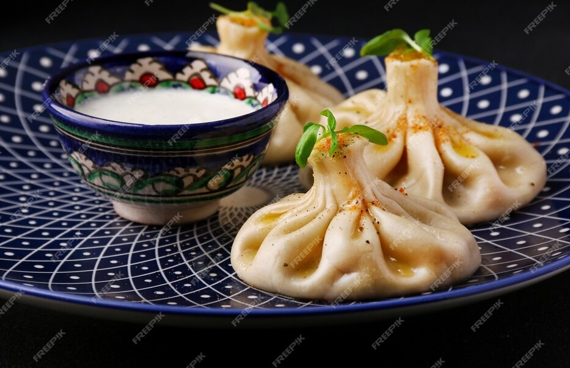

Khinkali

Khinkali is a dumpling in Georgian cuisine. It is made of twisted knobs of dough, stuffed with meat, fish or vegetables and spices.
Ingredients
- meat (lamb or beef and pork mixed)
- onions
- chili pepper
- salt
- cumin
Recipe instructions
- Add 1.1 kilo of flour to a mixing bowl. Make a depression in the middle of the flour and add the eggs.
- Add 450 ml of warm water.
- Mix the ingredients from the middle of the bowl until all of the flour is mixed.
- The dough should be formed into a ball.
- Roll out the dough until it is about 1/3 of an inch thick.
- Cut out circles of about 2.5 inches in diameter with a drinking glass.
- Add 1 heaped tbs of the meat mixture to the center of the round.
- Use your thumbs and index fingers to make an accordion type fold all around the outside.
- Carefully place the dumplings into a deep pan of boiling salty water, about 10-15 at a time.
Go to Main Page